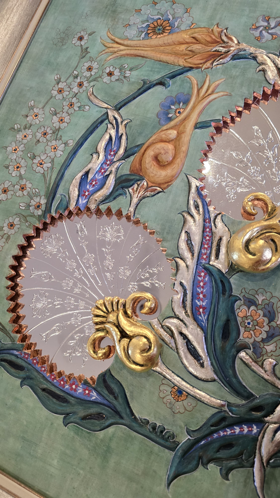
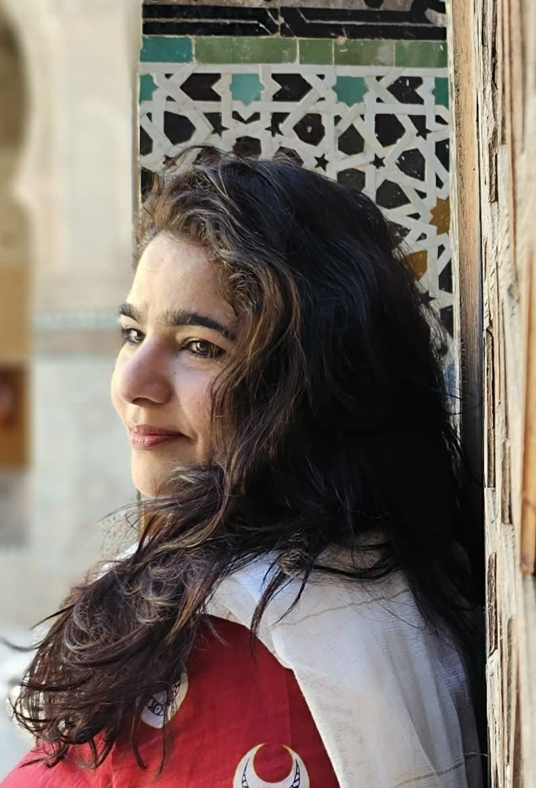

Fazal Ahmed
After graduating from the Central Institute of Arts and Craft in Karachi, Pakistan, Fazal Ahmed- a graphic
Designer turned artist, embarked on his creative journey as a sculptor, painter, jewellery artist , and
multidisciplinary artist. Over the past two decades, he has refined his unique artistic voice, establishing
himself as one of Pakistan’s most compelling and distinctive talents.
Fazal works with clay as one of his primary mediums, shaping it with remarkable skill and imaginative flair.
His hands bring life to the material, transforming simple earth into expressive forms that reflect cultural
narratives and personal symbolism. Each piece is a testament to his deep understanding of texture, form, and
movement.
In addition to his sculptural work, Fazal is also known for his intricately crafted sculpted jewellery. Each
piece is more than an accessory—it is a miniature artwork, that blends artistic elegance with wearable form,
turning everyday adornment into a bold expression of identity and creativity.
A recurring theme in Fazal’s recent 3D and relief sculptures is Confined. Through haunting imagery of
blindfolded faces and exaggerated, distorted limbs, his works express a powerful commentary on
psychological, societal, and emotional restrictions. These sculptures evoke a sense of struggle, silence,
and suppression—giving form to what is often left unspoken. Fazal carefully selects mediums such as white
ceramic clay and terracotta clay for each piece, chosen for their texture, tone, and expressive potential.
After undergoing the transformative process of kiln firing, some works are further elevated with delicate
touches of gold leaf, adding contrast and symbolic richness to the final form.
His broader body of work draws on African and Aboriginal aesthetics, merging these influences with a vibrant
colour palette to produce pieces that are both visually arresting . Fazal’s innovative approach and bold
style have positioned him as a thought-provoking presence in the contemporary art scene.
Fazal has exhibited his work in prominent galleries across Dubai,UAE and Pakistan. His exhibitions have been
praised for their emotional intensity and for challenging viewers to confront themes of identity,
confinement, and transformation.
“Confined” is a compelling relief sculpture composed of numerous expressive faces meticulously crafted from
white ceramic clay. Each face is encased in an oval, cocoon-like form, evoking a sense of individual
entrapment. These forms are systematically arranged in a tight grid within a deep, shadow-box frame, giving
the illusion of both physical and psychological confinement. The faces, though similar in structure, each
display subtle differences in expression—some neutral, others anguished or distorted—conveying a broad
emotional spectrum trapped within uniform boundaries.
The use of white ceramic clay enhances the piece's starkness and purity while also invoking themes of
silence, anonymity, and sterility. The matte, unglazed surface contributes to the raw, organic feel of the
work, allowing the emotional resonance of each face to stand out without distraction. The repetitive
arrangement emphasizes a loss of individuality, as though the figures are prisoners of an invisible system,
silently screaming from behind their ceramic enclosures.
Among the predominantly white faces, a few are rendered in deep black, sharply breaking the visual rhythm
and drawing immediate attention. These dark elements act as visual disruptions—perhaps representing moments
of despair, difference, or rebellion against conformity. Their presence challenges the uniformity and
underscores the psychological tension that permeates the piece.
“Confined” is not merely a visual experience but an emotional one. It speaks to the human condition—our
inner struggles, societal pressures, and the quiet pain of isolation. The viewer is invited to confront the
reality of what it means to feel boxed in, both physically and emotionally. In its stillness, the piece
evokes a loud, collective voice—one that resonates with anyone who has ever felt unseen, unheard, or
emotionally constrained. Through its minimalist yet poignant design, “Confined” becomes a powerful
reflection on identity, constraint, and the longing for release.


Amna Fraz
Karachi-based artist Amna Fraz, educated at the National College of Arts, skillfully integrates age-old
techniques with a contemporary vision.
Channeling the creative energies of the world around us, Amna crafts her own pigments by refining minerals
and rocks to extract colours of unparalleled purity and vibrancy.
Her work reflects tangible connections, linking us to our surroundings. It is an expression of the world's
artistry, underscoring the depth and complexity of our shared environment and a celebration of the cosmos
that we are all a part of, elementally connected to nature and its infinite wonders.
Ajami Art, representative of the pinnacle of Islamic prosperity, was cultivated in Damascus, which stood as
one of the world's most prosperous and culturally diverse commercial centers, influencing artistic styles
and embracing trends. The Ajami Room reflects this era with a distinctive technique where artists applied a
thick paste made of gypsum and animal glue that, once dried, created raised ornamentation. These elements
were further enhanced with gold leaf and painted over in egg tempera.
Inspired by these opulent historical interiors, my work seeks to blend traditional craft with a modern
sensibility while remaining faithful to its methods and materials. Central to my artistic practice is the
use of natural pigments—vivid colors drawn from minerals and earth, such as blue from lapis lazuli,
vermillion from cinnabar, and green from malachite. These practices not only connect peoples and eras but
also deepen our appreciation for craftsmanship as a bridge linking past and present, prompting reflection on
the enduring impact of cultural traditions across time and space.